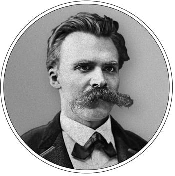
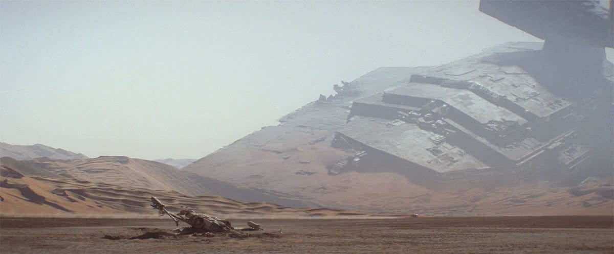

Саша
- организатор
- спикер
- разработчик
- руководитель
- Google Developer Expert
- Bravado
Никита
- организатор
- спикер
- разработчик
- руководитель
- Google Developer Expert
- Yandex
Про что поговорим?
- про подготовку доклада;
- про само выступление;
- про лайфхаки от бывалых.
Обязательно
светить лицом?
Цели
- хочу пропиарить продукт;
- хочу прокачать персональный бренд;
- хочу поделиться знаниями;
- хочу научить делать правильно;
- попросили помочь.
Что я могу рассказать?
- рабочий кейс;
- интересное API;
- будущее;
- пет-проект;
- что угодно интересное.
Вы не уникальны
(в наличии проблемы)
Вы уникальны
(в решении проблемы)
Какая основная мысль доклада?
Тема и описание ✓
<A>
Что такое поисковая выдача? По факту — страница с десятками ссылок. И когда тег <a>
— самое ценное, что нужно отдать пользователю, знать его особенности критически важно. Давайте разберёмся,
какие тайны в себе хранит этот тег, который с нами ещё со стандарта HTML 1.
Тема и описание ✓
Тебе не нужен Bootstrap! Или нужен? Или все же не нужен?
Времена славы фреймворка Bootstrap, как и библиотеки jQuery, прошли. Мир меняется, стандарты развиваются, и появляются интрументы, которые лучше соответствуют потребностям разработчиков. Но в основе Bootstrap лежат полезные конфепции и понятии, о которых стоит знать. Я расскажу, почему подобные библиотеки полезно хоть раз в жизни пощупать руками на примере Bootstrap. А также о том, чему подобные фреймворки не научат верстальщиков, но что стыдно не применять в 2019 году.
Тема и описание ✕
Идеальный доклад. Голая правда
Что делает доклад интересным и запоминающимся? Полезная тема, харизматичный спикер, весёлые гифки на
слайдах? Да, но список требований гораздо шире. Может показаться, что готовить доклады сложно. К тому же
непонятно, зачем это нужно лично вам. Плюсы и минусы выступлений для карьеры и личностного роста, как
подготовить тот самый, «идеальный» доклад — от опытных докладчиков и организаторов конференций и митапов.
Подача заявки
- тема доклада;
- описание доклада для сайта;
- описание доклада для ПК;
- видео для ПК;
- личные данные (имя, фамилия, компания, твиттер);
- фото;
- портфолио докладов.
Логические части
↓
Материалы
Сколько времени на выступление?
Структура — классика
- о спикере;
- план доклада;
- содержание доклада;
- выводы, резюме;
- контакты спикера;
- благодарность аудитории.
Структура — история
- завязка истории;
- о спикере в истории;
- развитие истории;
- вынесенный урок;
- контакты спикера.
Структура — решение
- проблема;
- решение проблемы;
- выводы.
всё плохо
↓
хватит это терпеть
↓
борьба
↓
враг побеждён
экспозиция
↓
завязка
↓
развитие + кульминация
↓
развязка
Захватить внимание
- работаю в Booble, Yamzex, Shmeta — опыт лидеров;
- постоянно практикуюсь в теме — актуальность;
- являюсь «звездой» в теме — экспертиза;
- имею крутой результат — глубина материала;
- никто до меня не рассказывал — уникальность;
- набил(а) шишки в процессе — опыт.
Путь выхода из конфликта
- баг в продакшене — починка;
- недостаток знаний — погружение;
- несовершенство платформы — костыли для неё;
- вызов — решение.
Пирамида Минто

Примеры
- Для базового уровня a11y достаточно знаний вёрстки.
- Видео в один кадр может весить меньше кадра-картинки.
- Смотрите, какое элегантное решение. Оно не работает.
- Нас всех заменят роботы. Или нет.
Показать программному комитету
Разминаем огуречики, 5 мин
Конкуренты за внимание
- твиттер;
- телеграм;
- почта;
- инстаграм;
- тикток;
- рабочий созвон;
- ...
Какие ваши
любимые доклады?
Спикер
+
Мультимедиа
+
❤︎
запись речи
дополнение к речи
Спикерский стиль
или
Стиль под доклад
Спикерский стиль
- Вадим Макеев (тема в Shower);
- Роман Дворнов (Keynote);
- Полина Гуртовая (рисунки от руки);
- Евгений 🐈 (шрифт).
«Всё познаётся
в сравнении»

Длина синего кита
достигает 33 метров
Длина синего кита
33 метра

Звёздные войны: Пробуждение силы / Джей Джей Абрамс
// my-paint.js
registerPaint('my-paint', class MyPaint {
static get inputProperties() { return ['--foo']; }
static get inputArguments() { return ['<color>']; }
static get contextOptions() { return { alpha: true }; }
paint(ctx, geom, properties, args) {
// ctx - контекст для рисования, как в canvas
// geom - размеры доступной для рисования области
// properties - свойства, на которые реагирует paintWorklet
// args - переданные в paintWorklet аргументы
// Можно рисовать почти как на обычном canvas
}
});
// my-paint.js
registerPaint('my-paint', class MyPaint {
static get inputProperties() {
return ['--foo'];
}
paint(ctx, geometry, properties, args) {
// рисуем на canvas
}
});
Видео и звук
∨
на свой страх и риск
С кем?
- с программным комитетом;
- с друзьями;
- с коллегами;
- с «уточкой»;
- с включённой видеокамерой.
Назначить заранее
↓
Есть дедлайн
Онлайн-прогон
=
онлайн-выступление
Интернет
- кабель, не Wi-Fi;
- остановить торренты;
- выключить YouTube;
- иметь под рукой мобильный про запас;
- сменить роутер и интернет-тариф.
Работа с браузером
↓
Видео
Интернет
↓
Мобильный интернет
Заминка
↓
Шутка в кармане
Разминаем огуречики, 5 мин
Успокоиться
или взбодриться?
Приведите друзей на выступление
Размять рот
(губы, язык, щёки)
Косметика
(и мужчинам тоже)
Уверенный старт
↓
Впечатление
Запоминающееся начало
- костюм динозавра;
- внезапный внешний вид;
- красивый первый слайд;
- ...
Вовлечение аудитории
- плюсик в чате;
- онлайн-квиз;
- поговорить с человеком онлайн;
- запустить активность.
Заметки в онлайне
не видно
Большой список
- пункт;
- пункт;
- пункт;
- важный пункт;
- пункт;
- пункт.
Как ответить?
- убедитесь, что поняли вопрос;
- озвучьте вопрос, если зрители его не слышали;
- подумайте, прежде чем ответить;
- не читайте второй доклад в ответе;
- «Я ответил(а) на ваш вопрос?».
Задающему вопрос
тоже страшно
Не планируйте ничего
после выступления
Отложенные сообщения
в Telegram
Видео доклада
вместо доклада?
Митап
=
Подготовка к конференции
Коллеги
=
Подготовка к митапу
 Тебе не нужен Bootstrap! Или нужен? Или все же не нужен?
Тебе не нужен Bootstrap! Или нужен? Или все же не нужен?